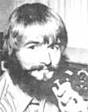
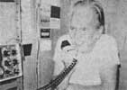
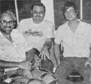
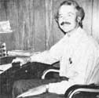
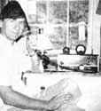
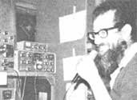
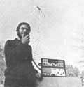

Copthorne Macdonald is the inventor of slow-scan television . . . a method of amateur radio transmission that allows ham operators to both hear and see each other during shortwave broadcasts.
New Directions Radio is alive and well on the West Coast! Alternatives-oriented ham radio has definitely exceeded "critical mass" proportions out West and appears to have established a selfsustaining chain reaction. Randy Brink, WA78KR (who-together with "So" Bogardus, W6HSE?puts out The New Directions Roundtable Newsletter) claims much of the credit for this ... he's been an active NDR promoter since the early part of 1974. A while back, Randy and his wife, Meta-who hail from Port Orchard, Washington -traveled throughout the western U.S. in order to meet some of the gang, andwith characteristic thoughfullness-took pictures as they went. Here-to help the rest of us get acquainted with "them that's doing"-are a few of Randy and Meta's photos, along with some comments about what these folks are up to.
Bo Bogardus (W6HSE), who currently lives in Berkeley, California, is a retired military man whose interests are now decidedly anti-military.
In addition to publishing The NDR Newsletter, Bo prints a newsletter for the Women for Peace organization. He also moderates the Sunday evening session of the Roundtable.
In Los Angeles, Randy (left) spent an enjoyable evening with Bill Goodart, K6CSP (center) and Curt Barnes, WB6EUN (right). Randy's three a and a half years in the military helped sensitize him to matters of war and peace, too: He is currently working with the Pacific Life Community in the Trident submarine protest. In addition, Randy has been active with a Washington, D.C.-based lobbying group called-of all things -New Directions, which is currently focusing its efforts on the nuclear issue.
Bob Hickerson (WA6RRR) has been very active in New Directions Radio
right from the beginning. Last July,he hosted a "New Directions Workshop"
at his homestead in Yreka, California.
Ben Parks (WB6CTI) is seen here at his homestead in Helena, California ... a homestead that Randy says Is one and a half miles up?"like, wheel-spinning up!"?a dirt road. For electricity, Ben uses a Pelton waterwheel coupled to an automobile alternator to feed a continuous five amps of current into a bank of ten batteries. Auto taillights supplement kerosene lamps to provide light for Ben's place.
Cave Junction, Oregon Is the hometown of Jonnie Klein (WB7NKC), whom Randy describes as a "dropout scientist" now active with a tree-planting co-op called Green Side Up. Among other things, Jonnie has been restoring old telephone storage batteries for some of the homesteaders in the West Coast NDR group.
After spending two years with Earthmind, Mark Dankoff (WB6SMJ) has headed down to New Mexico, where he plans to set up a homestead and continue his experiments with wind power.
Our ongoing effort to come up with simple, inexpensive ham gear has borne a little more fruit: I've worked out a way to convert six. transistor pocket radios into very usable oneband (3.5 to 4 MHz) ham receivers capable of picking up both code and voice signals. Cost: As little as $10. A how-to-do-it write-up?simple enough for a beginner to comprehend, but detailed enough for the person with some electronics experience to put to use-is available for 50c from Randy Brink. You can write to Ran. dy at 1174 S.E. Fern Rd., Port Orchard, Wash. 98366.
Peace,
Cop Macdonald (VE1BFL)
99 Fitzroy St.
Charlottetown
Prince Edward Island
Canada CIA 1 R6
New Directions Radio is an international network of radio amateurs concerned with those ways of using ham radio (and related modes of communicating) that promote our own growth as individuals, and which we perceive as helping to create a more aware, more caring, and more responsible human society. We encourage all who share these interests to work with us. A current schedule of on-the-air activities is included in each issue of the bi-monthly New Directions Roundtable Newsletter published by Randy Brink (WA7BKR) and "Bo" Bogardus (W6HSE) as a service to the rest of us. Send one 131 stamp for each issue desired to: Randy Brink, Rt. 2, Box 301B, Port Orchard, Washing. ton 98366. a
|
 |
 |
 |
|
 |
 |
 |
|
 |
|
|